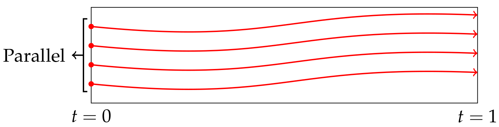

Fireflies, power plants, and convex polytopes
Tianran Chen
Department of Mathematics and Computer Science
Auburn University at Montgomery
November 12, 2021
Department of Mathematics and Statistics
Cleveland State University
(Virtual) Topology, Algebra, and Geometry Seminar
Adjacency polytopes
Given a graph $G$,
represented by its adjacency/edge list $A$
(list of edges and loops),
we consider a function
\[
f : A \to \mathcal{P}^n
\]
where $\mathcal{P}^n$ is the set of convex (lattice) polytopes
in $\mathbb{R}^n$.
The adjacency polytope of $G$,
induced by $f$, is the (lattice) polytope
\[
P =
\operatorname{conv}
\left(
\{ \mathbf{0} \}
\cup
\bigcup_{ \{i,j\} \in A } f(\{i,j\})
\right)
\; \subset \;
\mathbb{R}^n
\]
We only care about the properties that are invariant
under unimodular transformations.
Example.
Consider the complete graph with 3 nodes:
\begin{align*}
A &= \{\; \{0,1\}, \{1,2\}, \{2,0\} \;\} \\
f(i,j) &= \operatorname{conv} \{
\mathbf{e}_i - \mathbf{e}_j,
\mathbf{e}_j - \mathbf{e}_i
\}
\end{align*}
The adjacency polytope is the convex hull
\[
P =
\operatorname{conv}
\{
\mathbf{e}_0 - \mathbf{e}_1,
\mathbf{e}_1 - \mathbf{e}_0,
\mathbf{e}_1 - \mathbf{e}_2,
\mathbf{e}_2 - \mathbf{e}_1,
\mathbf{e}_2 - \mathbf{e}_0,
\mathbf{e}_0 - \mathbf{e}_2
\}
\]
-
Is there any connections between the
topological properties of $G$
and geometric properties of $P$?
-
How does this connection (if exist)
depends on the choice of $f$?
Adjacency polytopes (directed version)
Given a digraph $\vec{G}$,
represented by its list of directed edges $A$ (and loops),
we consider a function
\[
f : A \to \mathcal{P}^n
\]
where $\mathcal{P}^n$ is the set of convex (lattice) polytopes
in $\mathbb{R}^n$.
The adjacency polytope of $\vec{G}$,
induced by $f$, is the (lattice) polytope
\[
P =
\operatorname{conv}
\left(
\{ \mathbf{0} \}
\cup
\bigcup_{ (i,j) \in A } f((i,j))
\right)
\; \subset \;
\mathbb{R}^n
\]
Again, they are only defined up to unimodular transformations.
Adjacency polytope of $\vec{G}$ with directed edge set $A$
induced by $f$:
\[
P =
\operatorname{conv}
\left(
\{ \mathbf{0} \}
\cup
\bigcup_{ (i,j) \in A } f((i,j))
\right)
\; \subset \;
\mathbb{R}^n
\]
Why should we care?
Kuramoto model
Standard model for studying spontaneous synchronizations
in networks of weakly coupled oscillators
(Y. Kuramoto 蔵本由紀 1975).
Mechanical model:
Massless particles rotating on the unit circle
coupled with one another via springs.
Each particle has its own natural frequency
(angular velocity).
The strength of influence of one particle on another
is proportional to the sine of the phase angle difference.
\[
\dot{\theta}_i = \omega_i - \sum_{j=0}^n k_{ij} \sin(\theta_i - \theta_j)
\quad\text{for } i=0,\dots,n
\]
Kuramoto Y. (1975) Self-entrainment of a population of coupled non-linear oscillators. In: Araki H. (eds) International Symposium on Mathematical Problems in Theoretical Physics. Lecture Notes in Physics, vol 39. Springer, Berlin, Heidelberg.
Kuramoto model
Standard model for studying synchronization in
networks of oscillators.
The synchronization phenomenon
in the flashing of fireflies.
\[
\dot{\theta}_i = \omega_i - \sum_{j=0}^n k_{ij} \sin(\theta_i - \theta_j)
\]
where $\theta_i$'s models the flashing cycle of a firefly,
$\omega_i$ is its natural frequency,
and $k_{ij} = k_{ji}$ describes the coupling.
Some species of fireflies can synchronize their flashings
to have the exact same frequencies.
(Frequency synchronization)
Frequency synchronization
Configurations of $(\theta_0,\dots,\theta_n)$
for which $\dot{\theta}_i$ are all the same
\[
c = \omega_i - \sum_{j=0}^n k_{ij} \sin(\theta_i - \theta_j)
\quad\text{for } i=0,\dots,n
\]
Letting $\bar{\omega}_i = \omega_i - c$,
this is equivalent to nonlinear systems
\[
0 = \bar{\omega}_i - \sum_{j=0}^n k_{ij} \sin(\theta_i - \theta_j)
\quad\text{for } i=0,\dots,n
\]
I.e., frequency synchronization configurations
are the roots of the system
\[
p_i(\theta_0,\ldots,\theta_n) =
\bar{\omega}_i - \sum_{j=0}^n k_{ij} \sin(\theta_i - \theta_j)
\quad\text{for } i=0,\dots,n
\]
Sparsity
\[
p_i(\theta_0,\ldots,\theta_n) =
\bar{\omega}_i - \sum_{j=0}^n k_{ij} \sin(\theta_i - \theta_j)
\quad\text{for } i=0,\dots,n
\]
Earlier studies focused on
- complete networks ($k_{ij} \ne 0$ for all $i,j$),
- uniform coupling ($k_{ij} = k$ for all $i,j$).
Recent research trends is to explore sparse networks
with non-uniform couplings,
i.e., some $k_{ij} = 0$ and $k_{ij}$'s are not all identical.
We model the network as a weighted graph $G = (V,E)$,
\[
p_i(\theta_0,\ldots,\theta_n) =
\bar{\omega}_i - \sum_{ j \in \mathcal{N}_G(i) } k_{ij} \sin(\theta_i - \theta_j)
\quad\text{for } i=0,\dots,n
\]
where $\mathcal{N}_G(i)$ contains the neighbors of node $i$ in $G$.
\[
\begin{aligned}
\bar{\omega}_0 &= k_{01} \sin(\theta_0 - \theta_1) + k_{02} \sin(\theta_0 - \theta_2) \\
\bar{\omega}_1 &= k_{10} \sin(\theta_1 - \theta_0) + k_{13} \sin(\theta_1 - \theta_3) \\
\bar{\omega}_2 &= k_{20} \sin(\theta_2 - \theta_0) + k_{23} \sin(\theta_2 - \theta_3) \\
\bar{\omega}_3 &= k_{31} \sin(\theta_3 - \theta_1) + k_{32} \sin(\theta_3 - \theta_2)
\end{aligned}
\]
Since only angle differences $\theta_i - \theta_j$ are involved,
one variable can be set to a constant.
Under the symmetry assumption that $k_{ij} = k_{ji}$,
the equations add up to zero,
and therefore one equation can be removed.
\begin{align*}
\bar{\omega}_1 &= k_{10} \sin(\theta_1 - \theta_0) + k_{13} \sin(\theta_1 - \theta_3) \\
\bar{\omega}_2 &= k_{20} \sin(\theta_2 - \theta_0) + k_{23} \sin(\theta_2 - \theta_3) \\
\bar{\omega}_3 &= k_{31} \sin(\theta_3 - \theta_1) + k_{32} \sin(\theta_3 - \theta_2)
\end{align*}
In general, for a network of $n+1$ oscillators,
only $n$ equations in $n$ unknowns are needed
(square system).
Turning into an algebraic system
Synchronization configurations are roots of the nonlinear system
\[
p_i(\theta_0,\ldots,\theta_n) =
\bar{\omega}_i - \sum_{ j \in \mathcal{N}_G(i) } k_{ij} \sin(\theta_i - \theta_j)
\quad\text{for } i=0,\dots,n,
\]
which is not algebraic.
There are many ways to reformulate it has an algebraic system
-
J. Baillieul and C. Byrnes
Geometric Critical Point Analysis of Lossless Power System Models
-
D. Mehta, N. Daleo, F. Dörfler, and J. Hauenstein
Algebraic geometrization of the Kuramoto model: Equilibria and stability analysis
-
O. Coss, J. Hauenstein, H. Hong, and D. Molzahn
Locating and Counting Equilibria of the Kuramoto Model with Rank-One Coupling
Algebraic formulation
Consider complex phase angles
\[
\theta_i \;\mapsto\;
z_i = \theta_i - \mathbf{i}\, r_i
\]
and the change of variables
\[
x_i = e^{\mathbf{i} z_i} = e^{r_i + \mathbf{i}\,\theta_i}
\]
and the transformation
\[
\sin(z_i - z_j) = \frac{
e^{\mathbf{i}z_i - \mathbf{i}z_j} -
e^{\mathbf{i}z_j - \mathbf{i}z_i}
}{2\mathbf{i}}
=
\frac{1}{2\mathbf{i}} \left(
\frac{x_i}{x_j} - \frac{x_j}{x_i}
\right)
\]
\[
\bar{\omega}_i - \sum_{ j \in \mathcal{N}_G(i) } k_{ij} \sin(\theta_i - \theta_j)
\]
\[
\to
\]
\[
\bar{\omega}_i - \sum_{ j \in \mathcal{N}_G(i) } a_{ij}'
\left(
\frac{x_i}{x_j} - \frac{x_j}{x_i}
\right)
\]
The transcendental system is turned into a Laurent polynomial system.
Randomization
\[
p_i (x_1,\ldots,x_n) =
\bar{\omega}_i - \sum_{ j \in \mathcal{N}_G(i) } a_{ij}'
\left(
\frac{x_i}{x_j} - \frac{x_j}{x_i}
\right)
=0
\quad\text{for } i = 1,\ldots,n
\]
is a system of $n$ Laurent polynomials in $n$ complex variables.
For numerical computation,
we usually consider the "randomized" version
\[
\begin{bmatrix}
q_1 (x_1,\ldots,x_n) \\
\vdots \\
q_n (x_1,\ldots,x_n)
\end{bmatrix}
=
M \cdot
\begin{bmatrix}
p_1 (x_1,\ldots,x_n) \\
\vdots \\
p_n (x_1,\ldots,x_n)
\end{bmatrix}
=
\mathbf{0}
\]
for an $n \times n$ nonsingular matrix $M$
to improve numerical condition.
\[
q_k(x_1,\ldots,x_n) =
c_{k,0,0} -
\sum_{ \{i,j\} \in E }
c_{k,i,j}
\left(
\frac{x_i}{x_j} - \frac{x_j}{x_i}
\right)
\]
The main questions
Synchronization configurations in a Kuramoto model
are represented by certain complex solutions to the
Laurent polynomial system
\[
q_k(x_1,\ldots,x_n) =
c_{k,0,0} -
\sum_{ \{i,j\} \in E }
c_{k,i,j}
\left(
\frac{x_i}{x_j} - \frac{x_j}{x_i}
\right)
= 0
\quad\text{for } k = 1,\ldots,n.
\]
- How many solutions are there?
- How to find all solutions?
- What can network topology tell us?
- Can we decompose large networks into smaller ones?
The root counting question
\[
q_k(x_1,\ldots,x_n) =
c_{k,0,0} -
\sum_{ \{i,j\} \in E }
c_{k,i,j}
\left(
\frac{x_i}{x_j} - \frac{x_j}{x_i}
\right)
= 0
\quad\text{for } k = 1,\ldots,n.
\]
- Bezout number
- Bi-homogeneous Bezout number
- Bernshtein-Kushnirenko-Khovanskii bound
Root count as normalized volume
\[
q_k(x_1,\ldots,x_n) =
c_{k,0,0} -
\sum_{ \{i,j\} \in E }
c_{k,i,j}
\left(
\frac{x_i}{x_j} - \frac{x_j}{x_i}
\right)
= 0
\quad\text{for } k = 1,\ldots,n.
\]
Kushnirenko's Theorem.
The number of isolated $\mathbb{C}^*$-roots $(q_1,\ldots,q_n)$ has
is less than or equal to the normalized volume of
the common Newton polytope of $q_1,\ldots,q_n$.
The root count (n.o. "complex" synchronization configurations)
is bounded by the normalized volume of the polytope
\[
\operatorname{conv}
\left(
\bigcup_{ \{i,j\} \in E }
\{
\mathbf{e}_i - \mathbf{e}_j \;,\;
\mathbf{e}_i - \mathbf{e}_j
\}
\cup \{ \mathbf{0} \}
\right)
\]
This is precisely the adjacency polytope
of the network $G$ induced by
\[
f( \{ i,j \} ) =
\operatorname{conv}
\{
\mathbf{e}_i - \mathbf{e}_j \;,\;
\mathbf{e}_i - \mathbf{e}_j
\}.
\]
Adjacency polytope associated with the Kuramoto model
For a Kuramoto network modeled by
a weighted graph $G = (V,E)$, we construct the
adjacency polytope
\[
\operatorname{conv}
\left(
\bigcup_{ \{i,j\} \in E }
f( \{i,j\} )
\cup \{ \mathbf{0} \}
\right)
\]
where
\[
f( \{i,j\} ) =
\operatorname{conv}
\{
\mathbf{e}_i - \mathbf{e}_j \;,\;
\mathbf{e}_i - \mathbf{e}_j
\}.
\]
Power-flow equations (Lossless PQ-formulation)
Power networks
carry alternating current (AC) electric power.
Derived from Kirchhoff's circuit laws,
the PQ-type power-flow equations for power network $G$
consisting of $N$ buses is a system of $N-1$ equations
\[
S_i = \sum_{j \in N_G(i)} \overline{Y}_{ij} v_i \overline{v}_j
\quad\text{for } i = 2,\dots,N
\]
in the $N-1$ complex variables
$v_2, \dots, v_N$ with $v_1 = 1$
, where $\overline{v}_j$ denotes the
complex conjugate of $v_j$
Not a polynomial system.
Turning into an algebraic system
Examples of different approaches of turning power-flow equations into
polynomial systems
-
J. Baillieul and C. Byrnes
Geometric Critical Point Analysis of Lossless Power System Models. (1982)
IEEE Transactions on Circuits and Systems
-
T.-Y. Li, T. Sauer, and J. Yorke
Numerical Solution of a Class of Deficient Polynomial Systems
SIAM Journal of Numerical Analysis (1987)
-
(Recent survey) D. Mehta, D. Molzahn and K. Turitsyn
"Recent advances in computational methods for the power flow equations",
(2016) American Control Conference.
(Not a complete list)
\[
S_i = \sum_{j \in N_G(i)} \overline{Y}_{ij} v_i \overline{v}_j
\quad\text{for } i = 2,\dots,N
\]
Introducing new variables $u_i = \overline{v}_i$:
\[
S_i = \sum_{j \in N_G(i)} \overline{Y}_{ij} v_i u_j
\quad\text{for } i = 2,\dots,N
\]
We can consider the square system
\[
\left\{
\begin{aligned}
S_i &= \sum_{j \in N_G(i)} \overline{Y}_{ij} v_i u_j
\quad\text{for } i = 2,\dots,N \\
\overline{S}_i &= \sum_{j \in N_G(i)} Y_{ij} u_i v_j
\quad\text{for } i = 2,\dots,N
\end{aligned}
\right.
\]
which is a $(2N-2) \times (2N-2)$ polynomial system.
Homotopy method 同伦法
Goal: want to solve polynomial system $P(\mathbf{x}) = 0$
via a continuous deformation
$Q(\mathbf{x}) = 0$
$\longleftarrow$
$P(\mathbf{x}) = 0$
$H(\mathbf{x},0) = 0$
$H(\mathbf{x},t)$
$H(\mathbf{x},1) = 0$
Starting sys.
Homotopy
Target sys.
Solutions of $H(\mathbf{x},t) = 0$

Polyhedral Homotopy
Huber & Sturmfels 1995
\[
P(x_1,x_2) =
\begin{cases}
c_1 x_1^{a_{11}} x_2^{a_{12}} + c_2 x_1^{a_{21}} x_2^{a_{22}} + c_3 x_1^{a_{31}} x_2^{a_{32}} = 0 \\
c_4 x_1^{b_{11}} x_2^{b_{12}} + c_5 x_1^{b_{21}} x_2^{b_{22}} + c_6 x_1^{b_{31}} x_2^{b_{32}} = 0
\end{cases}
\]
with random (generic) coefficients.
Define homotopy $H(x_1,x_2,t)$
\[
\begin{cases}
c_1 x_1^{a_{11}} x_2^{a_{12}} \color{red}{t^{\omega_1}} +
c_2 x_1^{a_{21}} x_2^{a_{22}} \color{red}{t^{\omega_2}} +
c_3 x_1^{a_{31}} x_2^{a_{32}} \color{red}{t^{\omega_3}} \\
c_4 x_1^{b_{11}} x_2^{b_{12}} \color{red}{t^{\omega_4}} +
c_5 x_1^{b_{21}} x_2^{b_{22}} \color{red}{t^{\omega_5}} +
c_6 x_1^{b_{31}} x_2^{b_{32}} \color{red}{t^{\omega_6}}
\end{cases}
\]
for generic rational exponents $\omega_1,\dots$
\[ H(x_1,x_2,1) = P(x_1,x_2) \]
\[ H(x_1,x_2,0) = \text{?} \]
How to start $H$
\[ H(x_1,x_2,1) = P(x_1,x_2) \]
\[ H(x_1,x_2,0) = \text{?} \]
For $\alpha=(\alpha_1,\alpha_2)$ and $\beta=(\beta_1,\beta_2)$,
introduce new variables $(y_1,y_2)$.
\[
\begin{cases}
x_1 = y_1 t^{\color{red}{\alpha_1}} \\
x_2 = y_2 t^{\color{red}{\alpha_2}}
\end{cases}
\]
\[
H =
\begin{cases}
\;\;\;\; H_1 (
\,\;\;x_1\;\;,
\,\;\;x_2\;\;,
t) \\
\;\;\;\; H_2 (
\,\;\;x_1\;\;,
\,\;\;x_2\;\;,
t)
\end{cases}
\]
\[
H =
\begin{cases}
\color{red}{ t^{-\beta_1}} H_1 (
\color{red}{ y_1 t^{\alpha_1}},
\color{red}{ y_2 t^{\alpha_2}},
t) \\
\color{red}{ t^{-\beta_2}} H_2 (
\color{red}{ y_1 t^{\alpha_1}} ,
\color{red}{ y_2 t^{\alpha_2}} ,
t)
\end{cases}
\]
$H^\alpha(y_1,y_2,\color{red}{1}) \equiv P(y_1,y_2)$.
What about $H^\alpha(y_1,y_2,\color{red}{0})$?
IF
we choose the correct $\alpha$ and $\beta$ then
\[
H^\alpha(y_1,y_2,\,t) =
\begin{cases}
\text{2 terms without $t$}
\; + \; o(t)
\\
\text{2 terms without $t$}
\; + \; o(t)
\end{cases}
\]
\[
H^\alpha(y_1,y_2,\color{red}{0}) =
\begin{cases}
\text{2 terms without $t$}
\quad\quad\quad\;\,
\\
\text{2 terms without $t$}
\quad\quad\quad\;\,
\end{cases}
\]
Such binomial systems can be solved easily,
giving us starting points,
and the homotopy can start.
The key idea
IF
we choose the correct $\alpha$ and $\beta$ then
\[
H^\alpha(y_1,y_2,\color{red}{0}) =
\text{ a ``binomial system''}
\]
and can be solved.
In general, such pairs of "correct" $\alpha$ and $\beta$ is not unique.
The key question: How to find such "correct" $\alpha$ and $\beta$?
Answer: "Mixed cell computation"
(equivalent to tropical intersection)
The number of homotopy paths
Generally,
-
More path: slower.
-
Fewer path: faster.
The situation is much more complicated in terms of complexity.
Bernshtein-Kushnirenko-Khovanskii (BKK) bound
Theorem.
[Bernshtein, Kushnirenko, Khovanskii]
Given a system of (Laurent) polynomials
$f_1,\dots,f_n$ in $(x_1,\dots,x_n)$
with generic coefficients,
the number of isolated common roots in
$(\mathbb{C}^*)^n$ (i.e., $x_i \ne 0$ for each $i$) is
\[ \text{MVol}(\text{Newt}(f_1),\dots,\text{Newt}(f_n)). \]
Here, $\text{MVol}$ denotes the mixed volume function,
and $\text{Newt}(f_i)$ is the Newton polytope of $f_i$,
and the Newton polytope is the convex hull of the exponent vectors
in $f_i$ as points in $\mathbb{R}^n$.
This is the number of paths the polyhedral homotopy has to trace.
Mixed volume
\[
\text{Minkowski sum: }
A + B := \{ a + b \mid a \in A, b \in B \}
\]
Definition.
[H. Minkowski]
For convex polytopes $P_1,\dots,P_n$ in $\mathbb{R}^n$,
the mixed volume
$\text{MVol}(P_1,\dots,P_n)$
is the coefficient of $\lambda_1 \cdots \lambda_n$ in
\[
\text{vol}(\lambda_1 P_1 + \cdots + \lambda_n P_n)
\]
Many researchers prefer the definition with an additional
factor of $\frac{1}{n!}$.
2-dimensional case
$\text{MVol}(A,B)$
is the coefficient of $\lambda_1 \lambda_2$ in
$
\text{vol}(\lambda_1 A + \lambda_2 B)
$
\[
\text{MVol}(A,B) =
\text{vol}(A+B) - \text{vol}(A) - \text{vol}(B)
\]
This formula can be generalized to higher dimensional cases (polarization formula),
but this is not how we compute mixed volume (BKK bound) in practice.
Mixed volume computation
\[
\text{``Mixed volume''} \;=\; \text{sum of ``mixed cells''}
\]
In practice, mixed cells give up two thing
-
Mixed volume, i.e., generic root count, i.e., number of paths;
-
Starting point of polyhedral homotopies.
Mixed cells computation component is the most important part
of a polyhedral homotopy implementation.
Polyhedral homotopy: Summary
-
A numerical homotopy method for solving (Laurent) polynomial systems;
-
Finds all isolated complex solutions (including singular solutions);
-
Naturally parallel and highly scalable;
-
Generically optimal: it traces the least number of paths
for polynomial systems with generic coefficients;
-
Takes advantage of the combinatorial structures in the Newton polytopes
of a polynomial system;
-
It is bootstrapped by mixed cells computation;
Implementations (not a complete list)
- PHCPack (J. Verschelde)
- Hom4PS, Hom4PS-2, Hom4PS-3 (李天岩研究组)
- PSS5 (G. Malajovich)
- HomotopyContinuation.jl (P. Breiding, S. Timme)
- pHom (T. Gunji, S. Kim, M. Kojima, A. Takeda, K. Fujisawa, T. Mizutani)
Research supported, in part, by National Science Foundation,
Auburn University at Montgomery Grant-In-Aid,
and AMS-Simons travel grants
Thank You!
ti@nranchen.org
http://www.tianranchen.org/